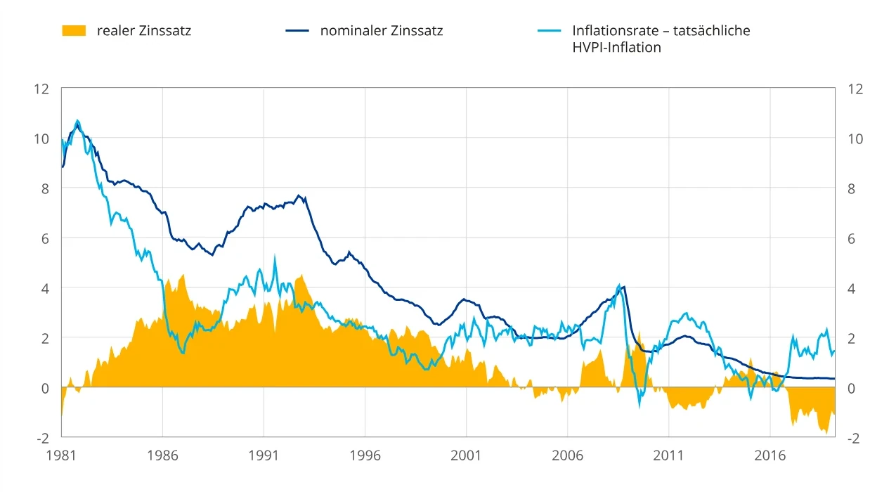

Tagesgeld & Festgeld
Zinsen verstehen, Rücklagen sicherheitsorientiert anlegen und die Kaufkraft im Blick behalten.
Warum Tagesgeld und Festgeld?
Nicht jeder Euro muss an der Börse investiert sein. Für den Notgroschen, absehbare Anschaffungen oder den defensiven Teil eines Portfolios sind Tages- und Festgeld oft geeignete Bausteine. Sie bieten vergleichsweise hohe Planbarkeit, sind aber nicht frei von Risiken: Insbesondere die Inflation kann die Kaufkraft deiner Ersparnisse schmälern.
Tagesgeld – flexibel bleiben
Du parkst Geld auf einem verzinsten Bankkonto. Das Guthaben ist üblicherweise täglich verfügbar. Der Zinssatz ist variabel: Die Bank kann ihn ändern, auch nach einer zeitlich begrenzten Neukundenaktion.
Typischer Einsatz: Notgroschen, Rücklagen und Geld, das du kurzfristig benötigst.
Festgeld – Zinsen festschreiben
Du legst einen Betrag für eine vereinbarte Laufzeit an. Der Zinssatz steht bei klassischem Festgeld für diese Zeit fest. Vorzeitige Auszahlungen sind normalerweise nicht vorgesehen.
Typischer Einsatz: Kapital, das du bis zu einem bekannten Termin nicht benötigst.
Tagesgeld oder Festgeld: Was passt wann?
| Merkmal | Tagesgeld | Festgeld |
|---|---|---|
| Verfügbarkeit | In der Regel täglich | Meist erst am Laufzeitende |
| Zinssatz | Variabel | Für die vereinbarte Laufzeit fest |
| Planbarkeit | Flexibel, Zins kann sinken | Bekannter Nominalzins, feste Bindung |
| Geeignet für | Notgroschen und kurzfristige Ziele | Planbare Ausgaben mit zeitlichem Vorlauf |
| Wichtigstes Alltagsrisiko | Zinssenkung und Inflation | Fehlende Liquidität und Inflation |
Die Konditionen unterscheiden sich je nach Bank. Maßgeblich sind immer die konkreten Vertragsbedingungen.
Warum gelten beide als risikoarm?
Anders als Aktien oder Anleihen haben klassische Tages- und Festgeldkonten keinen täglich schwankenden Börsenkurs. Bei einem regulär geführten Eurokonto wird der nominale Guthabenbetrag nicht durch Marktbewegungen kleiner. Dazu kommt die gesetzliche Einlagensicherung.
In der EU sind gedeckte Einlagen grundsätzlich bis zu 100.000 € pro Person und Bank geschützt – einschließlich aufgelaufener Zinsansprüche. Mehrere Konten bei derselben Bank erhöhen diese Grenze nicht. In besonderen Lebenssituationen kann zeitweise ein höherer Schutz gelten. Mehr bei der BaFin.
Risikoarm bedeutet nicht risikofrei: Neben einer möglichen Bankinsolvenz oberhalb der Sicherungsgrenze sind Kaufkraftverlust, Zinsänderungen, gebundenes Kapital und bei Fremdwährungskonten Wechselkursschwankungen zu berücksichtigen. Prüfe bei ausländischen Banken das zuständige Sicherungssystem und die Vertragsbedingungen.
Hohe Zinsen: Was bleibt nach der Inflation?
Ein hoher Zins sieht attraktiv aus. Doch entscheidend ist, wie stark die Preise gleichzeitig steigen. Der Nominalzins beschreibt den angegebenen Zinssatz. Der Realzins berücksichtigt die Inflation und zeigt, ob die Kaufkraft wächst oder sinkt.
Genauer: Realzins = (1 + Nominalzins) / (1 + Inflationsrate) − 1. Bei niedrigen Raten ist die einfache Differenz eine gute Näherung.
| Beispiel mit 10.000 € für ein Jahr | A | B |
|---|---|---|
| Nominalzins | 2 % | 5 % |
| Inflation | 1 % | 6 % |
| Zinsen vor Steuern | 200 € | 500 € |
| Realzins (exakt, vor Steuern) | +0,99 % | −0,94 % |
| Kaufkraft des Endbetrags in heutigen Euro | 10.099,01 € | 9.905,66 € |
Im zweiten Beispiel erhältst du zwar mehr Zinsen, kannst dir am Jahresende aber weniger kaufen als zuvor. Die Zahlen sind bewusst hypothetisch und keine aktuellen Marktangebote.
Warum steigen Zinsen häufig bei hoher Inflation?
Die Europäische Zentralbank kann ihre Leitzinsen anheben, um die Inflation zu begrenzen. Das beeinflusst häufig auch die Sparzinsen der Banken. Höhere Nominalzinsen sind deshalb nicht automatisch ein Zeichen für bessere reale Erträge: Sie können mit höheren Preissteigerungen einhergehen.
Historische Entwicklung: Nominalzins, Realzins und Inflation
Die Grafik zeigt, wie sich die Verzinsung kurzfristiger Bankeinlagen und die Inflation im Euroraum zwischen 1981 und etwa 2019 entwickelt haben.

Die Entwicklung verdeutlicht: Selbst hohe Nominalzinsen können bei gleichzeitig hoher Inflation nur geringe oder sogar negative reale Erträge bedeuten. Entscheidend ist daher die Kaufkraftentwicklung und nicht allein der ausgewiesene Zinssatz.
Worauf solltest du bei der Auswahl achten?
- Einlagensicherung: Welche Bank ist Vertragspartner und welches Sicherungssystem gilt?
- Zinssatz: Gilt er dauerhaft oder nur für wenige Monate beziehungsweise Neukunden?
- Zinsgutschrift: Wie oft werden Zinsen gutgeschrieben und wann stehen sie zur Verfügung?
- Laufzeit und Verfügbarkeit: Wann brauchst du das Geld wieder?
- Verlängerung: Wird Festgeld am Ende automatisch verlängert? Welche Kündigungsfrist gilt?
- Inflation und Steuern: Wie hoch ist der tatsächliche Kaufkraftzuwachs?
- Währung und Kosten: Bestehen Wechselkursrisiken, Kontogebühren oder weitere Bedingungen?
Tagesgeld schafft Flexibilität. Festgeld schafft Zinsplanbarkeit. Beides kann dein Portfolio stabilisieren – langfristigen Kaufkraftzuwachs garantiert jedoch keines von beiden.
Weiterführende Informationen
BaFin: Einlagensicherung und Anlegerentschädigung
Hinweis: Allgemeine Finanzbildung, keine individuelle Anlage- oder Steuerberatung. Zinssätze und Konditionen können sich ändern.
← Zurück zur Investieren-Übersicht